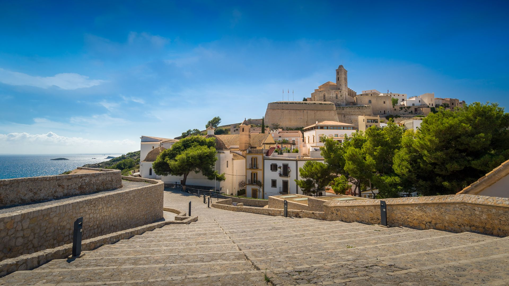

Informacion General
La imagen del centro histórico amurallado se ha ido configurando desde las épocas medieval y moderna o renacentista. Dalt Vila es la parte alta del casco histórico de Ibiza, situada en el recinto amurallado renacentista del siglo XVI.
Elegante y majestuosa, centinela de la seguridad del pueblo ibicenco que descansa a sus pies, encontramos la ciudad amurallada de Dalt Vila , orgullo de los isleños y tesoro de la antigüedad. Esta ruta propone un recorrido por la muralla y los siete baluartes que protegían a Ibiza de los ataques de los piratas turcos. Desde este magnífico lugar, declarado en 1999 Patrimonio de la Humanidad por la UNESCO , se divisa una instantánea inolvidable de la isla blanca.
La ciudad antigua ha sido históricamente (hasta finales del siglo XVIII) un importante enclave por la posición geográfica estratégica en la red de comunicaciones marítimas del Mediterráneo. Así pues, no es de extrañar el carácter defensivo y, al mismo tiempo, protector de Dalt Vila.
Del conjunto destacan los baluartes renacentistas del siglo XVI, el ayuntamiento (un antiguo convento dominico), la catedral de Santa María de las Nieves y las puertas que presenta el recinto, de las que destaca el portal de ses Taules, junto al mercado Viejo. Las calles presentan un trazado irregular que se adapta de formas diferentes a los desniveles.
La renovación y fortificación de la ciudad de Eivissa formó parte del plan de modernización de defensa costera mediterránea de Carlos I y de Felipe II. Intervinieron dos ingenieros de la Corona, Giovani Battista Calvi, que asumió la primera fase (iniciada en 1555) con los primeros baluartes, y Jacobo Paleazzi Fratin (desde 1575), que inició un nuevo baluarte, amplió un otro y modificó el acceso principal. Según los especialistas, se trataba de aplicar los avances de la arquitectura militar que se estaban introduciendo en los territorios peninsulares. En las obras, que se mantuvieron hasta finales del siglo XVI, participaron trabajadores, maestros e ingenieros locales.
El acceso principal, la puerta del Mar o portal de ses Taules , presenta un carácter monumental, como si se tratara de un gran arco de triunfo flanqueado por dos estatuas romanas (se trata de réplicas, porque las originales están en el museo), un gran escudo con los emblemas de Felipe II y una lápida con los nombres del rey y del gobernador de ese momento, que data de 1585. La entrada conserva parte del engranaje del puente levadizo sobre un foso excavado delante mismo.